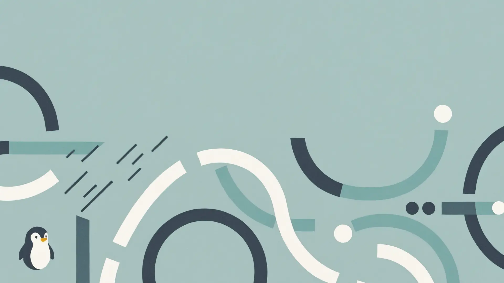

The OS Built to Lead.
ZSLinux is more than an operating system. It's a precision-engineered tool that fuses the raw power of the XanMod kernel with the elegance and lightness of the XFCE environment.
Uncompromised Performance
XanMod Kernel as standard.
Lightness and Speed
Responsive XFCE environment.
Solid Foundation
Based on Ubuntu 24.04 LTS.

Unmatched Fluidity.
Thanks to the lightweight XFCE environment, ZSLinux runs lightning-fast even on older hardware. Minimalism that unleashes power.
Power that Inspires.
The optimized XanMod kernel squeezes every drop of performance from your CPU, giving you an edge in gaming, work, and daily tasks.
Stability You Can Rely On.
Based on Ubuntu 24.04 LTS "Noble Numbat," ZSLinux guarantees years of support and access to thousands of trusted applications.
Ready for Anything. Instantly.
With Wine and Anydesk built-in, you're ready to work with Windows applications and remote desktops from the first minute.
Beauty is in the details.


Experience the evolution.
Join a community that values performance, freedom, and design. ZSLinux is free to download and always will be.
Download ZSLinux v3.9 Now